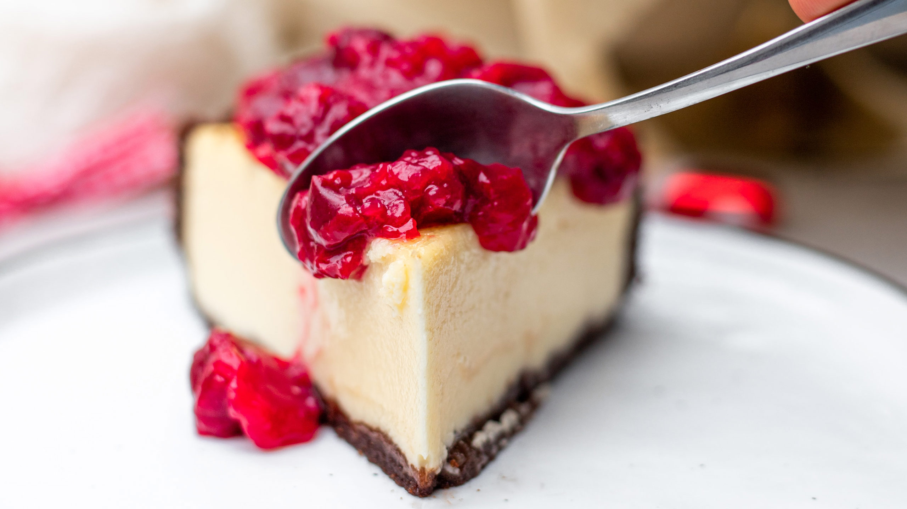

Un cheesecake es un postre muy popular desde el siglo XX hecho a base de ricota, requesón, queso quark, azúcar y algunas veces otros ingredientes, tales como: huevos, crema de leche o nata, harina, patata, almendras o frutas (limones o naranjas, etc.). También pueden agregarse ciertos saborizantes, tales como mermelada, chocolate o whisky. Una de sus combinaciones más comunes es la tarta de queso con salsa de arándanos por encima.
Una antigua forma de pastel de queso podría haber sido un plato muy popular en la Antigua Grecia, incluso antes de la adopción romana del platillo con la conquista de Grecia.
La mención escrita más temprana de un pastel de queso fue hecha por el médico griego Aegimo, que escribió un libro sobre el arte de hacer queso
Catón el Viejo, en su manual De agri cultura (también llamado De Re Rustica) incluye recetas de tres pasteles para usos religiosos como ofrendas: libum, savillum y placenta. De los tres, la placenta es el más parecido a la mayoría de los pasteles de queso modernos, con una corteza que se prepara y se cuece por separado.